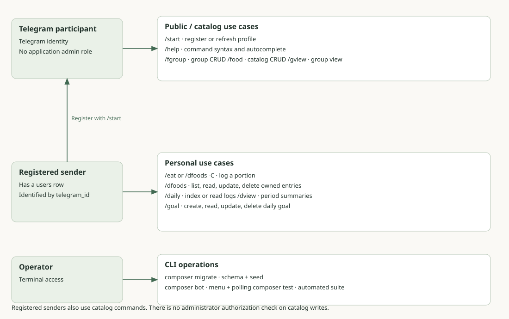
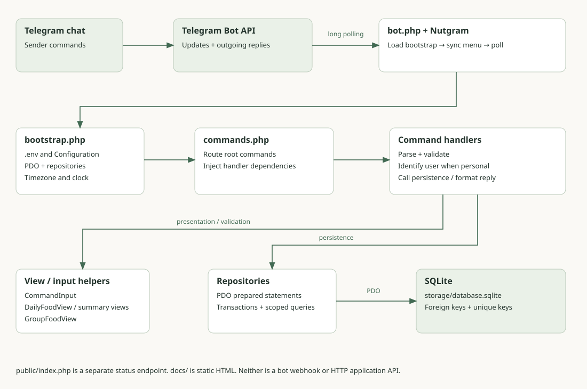
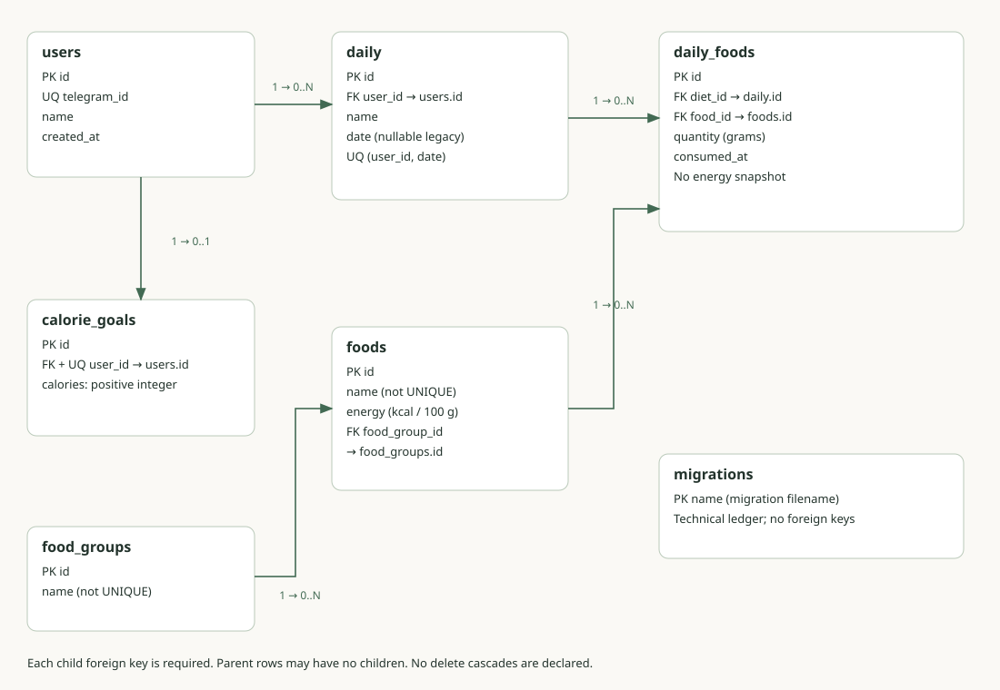
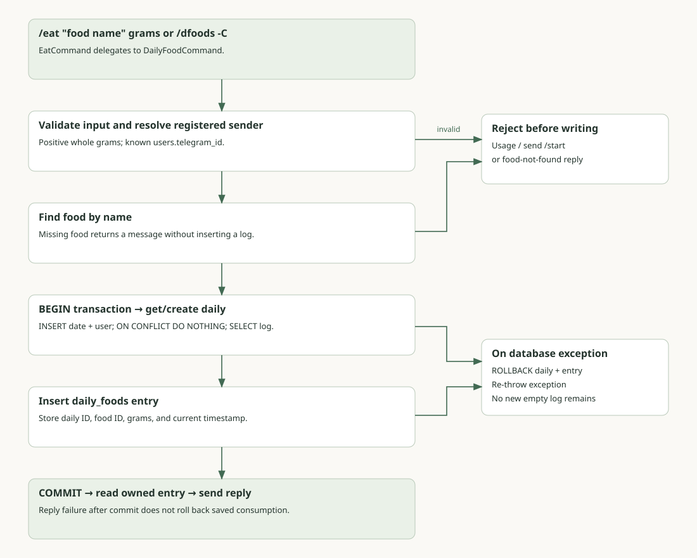
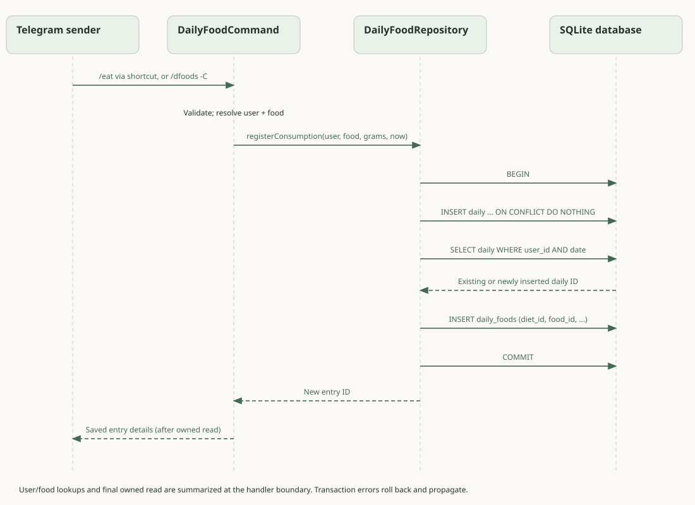
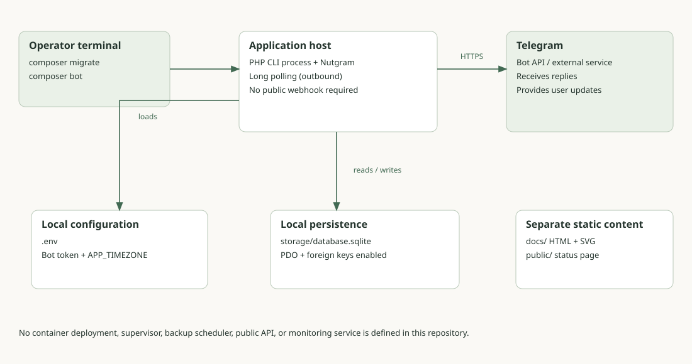

These diagrams describe the current source. SVGs display offline without JavaScript or a CDN. Each diagram includes an accessible description and an editable Mermaid source. Component and flow arrows describe dependencies or execution; the entity diagram explicitly labels cardinalities.
Actors and use cases
Catalog access is public to bot participants. Personal commands require a users row; no administrator role is modeled.


Source: app/bot/commands.php
Application components
A modular PHP polling application, not independent network microservices. Arrows describe setup and call dependencies. Telegram remains the external transport.


Source: app/bot/bootstrap.php
Entity–relationship model
Arrow labels specify parent-to-child cardinality. Every declared child foreign key is required. migrations is a separate technical ledger; sqlite_sequence is an SQLite engine artifact.


Source: app/database/migrations/002_create_food_tables.php
Consumed-food activity flow
Only valid logging requests reach the transaction. The diagram separates rejection before writing from rollback after a database exception.


Source: app/database/repositories/DailyFoodRepository.php
Consumption sequence
The SVG summarizes repository lookups at the handler boundary. The editable sequence source expands DailyRepository and the exception branch. Both show commit before the Telegram reply.


Source: app/database/repositories/DailyFoodRepository.php
Runtime topology
The diagram represents what is configured: local PHP CLI, local SQLite, environment variables, and an external Telegram connection. It does not invent a deployment platform.


Source: app/bot/bot.php
Reading the models
- A registered sender is a Telegram user with an application user row, not an access-control role.
- Cardinality 1 → 0..N means a parent can have no children or many; each child points to one required parent. users → calorie_goals is 1 → 0..1.
- daily_foods.diet_id references daily.id. There is no separate diets table.
- The dated daily uniqueness key excludes the nullable legacy case. See the data dictionary for the exact constraints.
- These are implementation diagrams, not a proposed distributed architecture or deployment recommendation.